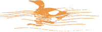
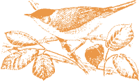

|
|
Summer 1996:
The following article was written by Martin Calvert and originally printed in the RSPB Leeds Local Group Newsletter). It has been reproduced with his permission.
The record number of species seen in Yorkshire in one year is 262, seen by Dale Middleton in 1994. He reckoned he missed a further 22 to make a total of 284 available species that year, and it took 18,500 miles to see them!
I don't have time to do that sort of listing and it would mean missing out on my passion for local patch watching. I keep a list for Gledhow Valley and my record for species seen in one year is 65 in 1991 when everything seemed to turn up in Gledhow including my only sightings of cuckoo and yellowhammer and my last sightings of kestrel and whitethroat. My year lists range from 53 to 65, during which time my life list for Gledhow has risen to 82.

January 22nd and the regular Gledhow coot turned up, it has visited us for the last three winters. Then six goldfinches in the garden took the total to 36. The first of many local patch sightings of waxwing was on March 3rd when 20 perched in a tree visible from the house. A skylark flew over singing, very nice, but I also found out I'd missed a heron that has been feeding in the stream in the cold snap. I just hope that it won't be a vital miss. March 11th saw the return of the little grebe from its winter holidays. Total 42 - so far so good. Redpolls in the larches and two tawny owls at twilight took the count to 44.
In between the redpolls and the owls, a visit to my other favourite local patch at Barnbow revealed stonechat and wheatear in successive weeks. Now they would be nice in Gledhow. A visit to Suffolk was highlighted by a woodlark singing continuously for 34 minutes - it was impossible to leave whilst thie bird was delivering its marvellous song. I think woodlark pips the nightingale, but they're both brilliant.
Back to Gledhow and a chiff chaff on April 2nd and a singing willow tit were excellent finds. A week of patch pounding in April produced waxwings every morning at 6.30am. On the 9th a curlew flew over, a life patch tick, number 83 and 47 for the year. This must be the year! Meadow pipit soon followed then April 11th at 6.30am produced waxwing and woodcock, the latter flying from one side of Gledhow Valley Road to the other. The fiftieth species for the year came when a pair of Canada geese dropped in.
A single redwing on the 17th was very good but not a tick. Willow warbler and blackcap on the 22nd and the little grebe numbers doubled and nest building began with a vengeance. The moorhens, however, didn't approve and kept trampling over the foundations.

The 8th of May produced a swift, a few days late but very welcome, then on the 16th a bonus. I was relaxing on my bed, snoozing, when the distinctive call of a wader disturbed my slumber. A quick swivel to look out of the window revealed the second oystercatcher flying over. (The first was only heard from the toilet window). So up to 59 by the 26th.
Still to come hopefully is house martin (rare in summer round here). If I watch the flights of winter gulls, then herring and greater black-backed gull may be picked up. Other possibilities are kingfisher, siskin, heron lesser black-backed gull, lesser whitethroat and kestrel. A repeat of my best ever Gledhow tick, firecrest, would be nice. Surely this must be the year when the record tumbles. Watch this space.
If you have any information, stories, pictures or memories you would like to contribute to this section of the web site, please contact us.
|
| ||||||
 | ||||||||